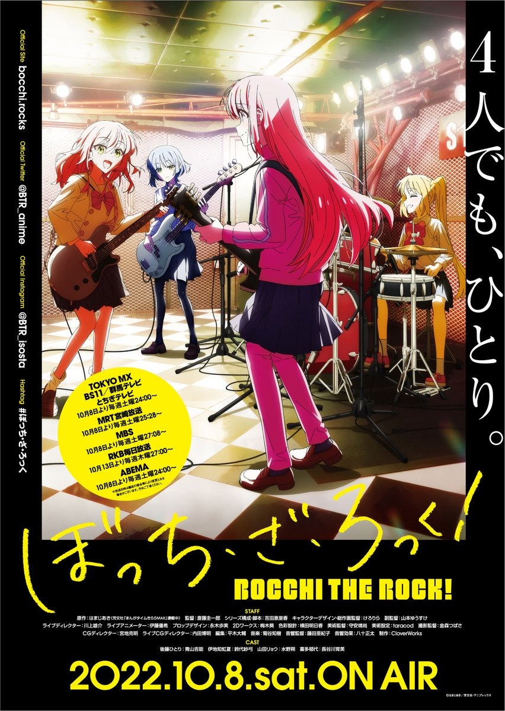

AnimeInterester
孤獨搖滾！

故事簡介
女高中生後藤一里抱持著組樂團的夢想，卻因為不擅與人來往，而無法實現願望。她在某天放學後被急徵求著吉他手的伊地知虹夏發現，而因緣加入了「結束樂團」，與山田涼和喜多郁代等其他成員一起開始了音樂活動。
製作人員
原作：はまじあき
導演：斎藤圭一郎
劇本統籌・劇本：吉田恵里香
角色設計・總作畫監督：けろりら
副導演：山本ゆうすけ
LIVE導演：川上雄介
LIVE動畫師：伊藤優希
道具設計：永木歩実
2D：梅木葵
色彩設計：横田明日香
美術監督：守安靖尚
美術設定：taracod
攝影監督：金森つばさ
CG導演：宮地克明
LIVE CG導演：内田博明
剪輯：平木大輔
音樂：菊谷知樹
音響監督：藤田亜紀子
音響效果：八十正太
聲優名單
後藤一里：青山吉能
伊地知虹夏：鈴代紗弓
山田涼：水野朔
喜多郁代：長谷川育美
伊地知星歌：内田真禮
PA：小岩井小鳥
廣井菊理：千本木彩花
後藤二里：和多田美咲
後藤美智代：末柄里恵
各集標題
| 話數 | 標題 |
|---|---|
| 1 | 翻轉孤獨 |
| 2 | 明天見 |
| 3 | 火速增員 |
| 4 | 跳躍的女孩(們) |
| 5 | 不會飛的魚 |
| 6 | 八景 |
| 7 | 到妳的家裡 |
| 8 | 孤獨搖滾 |
| 9 | 江之島電扶梯 |
| 10 | 黑夜之後 |
| 11 | 十二進位法的黃昏 |
| 12 | 晨光落在你身上 |